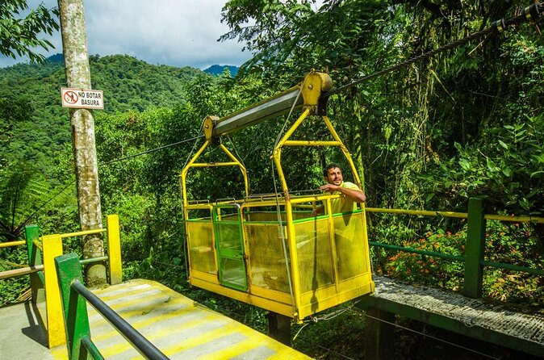
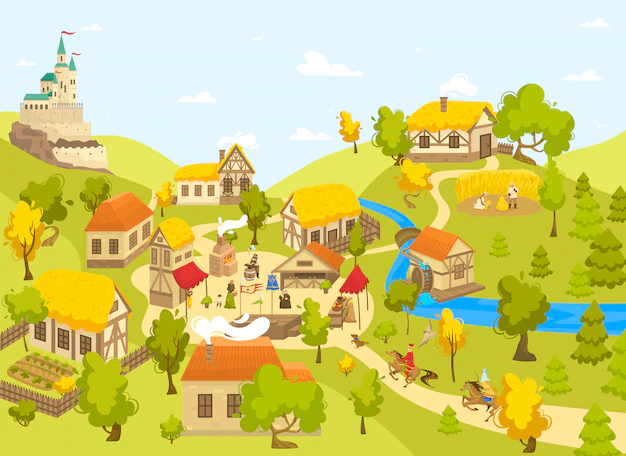

TARABITA
DESCRIPCIÓN:Está rodeado de naturaleza y de bosque virgen además cuenta con una casa de cristal arriba de un árbol  de donde podrás observar ceibos con más 700 años de vida y hasta 42 metros de altura, y otras especies como roble, guayacán, laurel, árboles milenarios, especies de aves, ranas, sapos, serpientes, lagartijas, caimanes y tortugas y se puede realizar campamentos.
Dirección:Recinto Flor del Valle en la 29 y La Mina.ㅤㅤㅤㅤㅤㅤㅤㅤㅤㅤㅤㅤㅤㅤㅤㅤㅤㅤㅤㅤㅤㅤㅤㅤㅤㅤ
Pueblo
 Los trabajos están a cargo de la directiva del sector, la Prefectura y el Municipio de La Concordia. Uno de los sectores en los que se interviene es en la calle que sirve de acceso a la comunidad. El objetivo es brindarle comodidad a los turistas que llegarán a Flor del Valle por motivo del Carnaval, dijo María Elene Lugo, presidenta del sitio. Por su parte, la Prefectura arreglará los caminos vecinales y el Municipio intervendrá en la vía de acceso al recinto 29 de Septiembre.